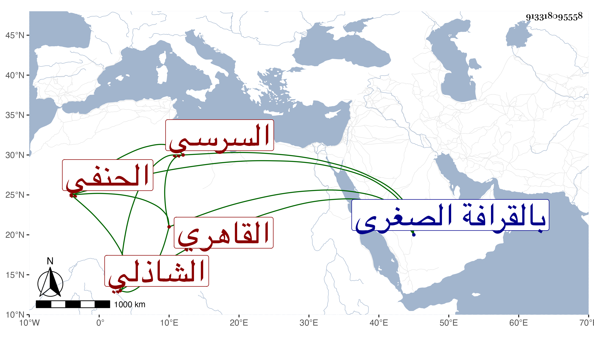

0902Sakhawi.DawLamic.ITO20230111-ara1.EIS1600.913318095558
Biography ID: 913318095558
370
أحمد بن محمد بن عبد الغني الشهاب أبو العباس السرسي الأصل القاهري الحنفي الشاذلي وهو بكنيته أشهر ممن أخذ عن الجمال الضرير وانتفع به وربما وافقه في المجيء إلى العز بن جماعة قرأ على شيخنا شرح ألفية العراقي وصحب محمد الحنفي فاختص به وتلمذ له مع تقدمه عليه في الفنون وغيرها بحيث راج أمر الحنفي به وكان ابن الهمام يصرح بفضيلته وربما أرسل إليه الطلبة لقراءة تصانيف ابن الهمام عليه بل هو في الفضيلة والصلاح كلمة اتفاق وتصدى للإقراء في حياة الشيخ محمد وبعده فتخرج به جماعة وتسلك بإرشاده غير واحد ، وكان إماما علامة واعظا فصيحا طارحا للتكلف كثير المحاسن سمعت وعظه . ومات في يوم الثلاثاء ثامن عشري جمادى الآخرة سنة إحدى وستين عن أزيد من ثمانين سنة فيما قيل ودفن بالقرافة الصغرى وكان له مشهد عظيم رحمه الله وإيانا .
